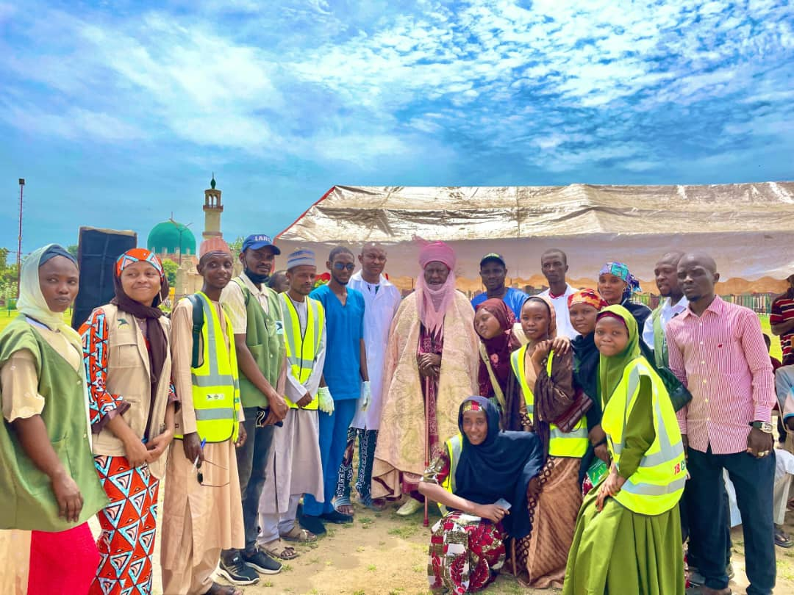

Active

ASCENT DR-TB Project
Oct 2024 - Jul 2025
Kano State
Health
TB Prevention
Improving access to shorter, safer drug-resistant TB treatment regimens (BPaL/M) through community-led advocacy and policy influence in Kano State.
Key Impact:
- Accelerating national scale-up of innovative DR-TB treatments
- Community-led monitoring for treatment quality
- Policy advocacy for wider BPaL/M availability
Funded by:
Unitaid through Treatment Action Group (TAG)
Learn More
Active

Girls' Education & Protection Program (GEPP)
2024 - Ongoing
10 LGAs, Kano State
Education
Girl-Child Protection
Breaking barriers to education for adolescent girls (ages 10-19) through community engagement, school support, and multi-sectoral collaboration to create safe learning environments.
Key Impact:
- Increased enrollment and retention of girls in schools
- Community mobilization for girls' education
- LGA Education Facilitators deployed across 10 LGAs
- Strengthened protection systems for adolescent girls
Supported by:
Girls Opportunity Alliance - Obama Foundation
Learn More
Active

AYP Project
12 Months
Kano State
Health
HIV/AIDS
Youth
Enhancing HIV service delivery for Adolescents and Young People through community-led monitoring, technology, and data-driven interventions.
Key Impact:
- Improved access to HIV prevention, testing, and treatment
- Community-led service quality monitoring
- Evidence-based policy advocacy
- Youth empowerment in health decisions
Supported by:
PEPFAR (U.S. President's Emergency Plan for AIDS Relief)
Learn More
Active

Community Health Promotion & Referral Support
Jun 2025 - Jan 2026
Zango LGA, Katsina
Health
Maternal Health
Improving health outcomes for pregnant women, lactating mothers, elderly, and children under five through community health promotion and strengthened referral systems.
Key Impact:
- Enhanced health literacy in target communities
- Increased uptake of essential health services
- Strengthened community feedback mechanisms
- People-centered healthcare delivery
Funded by:
Médecins Du Monde through EU Civil Protection
Learn More
Completed

TPT Project
May 2024 - Apr 2025
Kano State
Health
TB Prevention
Building community demand and assessing acceptability of shortened Tuberculosis Preventive Therapy (1HP regimen) among high-risk populations in Kano State.
Key Achievements:
- Strengthened TB prevention through community structures
- Increased awareness of preventive treatment options
- Enhanced collaboration with healthcare services
Funded by:
Unitaid through Treatment Action Group
Learn More
Active

Girls/Women Empowerment Project
2018 - Ongoing
Kano State & Beyond
Economic Empowerment
Skills Training
Economic empowerment through practical skills training in soap making, tailoring, shoe making, and entrepreneurship for vulnerable women and girls.
Key Impact:
- 600+ women and girls trained
- 530+ now earning income
- Increased financial independence and social status
- Breaking cycles of poverty and dependency
Learn More
Active

Education Support Project
Ongoing
Vulnerable Children
Education
Child Protection
Providing school fees, uniforms, and educational materials for vulnerable children, including GBV survivors and children with disabilities.
Key Impact:
- Currently supporting 4 children in private schools
- Reduced dropout rates in target communities
- Quality education for marginalized children
- Community sensitization on education rights
Learn More
Active

Prisoners & Juvenile Rehabilitation
Ongoing
Kano & Bauchi
Advocacy
Rehabilitation
Empowering female prisoners and juvenile offenders through vocational training, psychosocial support, and advocacy for humane treatment.
Key Impact:
- 100+ beneficiaries received vocational training
- Mentorship for successful reintegration
- Advocacy for prisoner rights and welfare
- Reduced stigma and systemic barriers
Learn More
Active

Community Paralegal & ADR Project
Ongoing
Kano & Jigawa
Advocacy
Legal Aid
Training community leaders in paralegal services and conflict resolution to promote grassroots justice and peace in 8 communities.
Key Impact:
- Community-based dispute mediation
- Reduced burden on formal judicial systems
- Increased human rights awareness
- Prevention of violence through early intervention
Learn More
Active
Maternal & Child Health Project
2018 - Ongoing
Kano State
Health
Maternal Health
Improving maternal and child health outcomes through health literacy, early antenatal care referrals, and community engagement in 4 underserved communities.
Key Impact:
- 20 healthcare workers trained
- Pregnant and lactating women sensitized
- Reduced maternal and infant mortality
- Increased skilled birth attendance
Supported by:
Johnson & Johnson through Lagos Business School
Learn More
Active

Action Against Child Abuse & Rape
2017 - Ongoing
Child Protection
Advocacy
Child Protection
Comprehensive support for child abuse survivors including legal aid, counseling, and economic assistance, plus prevention programs in schools.
Key Impact:
- Legal representation for survivors
- Trauma counseling and healing services
- School-based awareness programs
- Collaboration with law enforcement and DPP
Learn More
Completed

Social Awareness Project
2016 - 2020
Kano & Bauchi
Advocacy
Community Development
Addressing social issues through community counseling, sensitization campaigns, and outreach to married couples, correctional facilities, orphanages, and hospitals.
Key Achievements:
- 300+ people directly reached
- Monthly public lectures conducted
- Strengthened community cohesion
- Support networks for vulnerable groups
Learn More